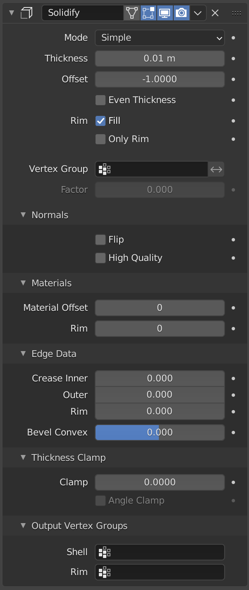
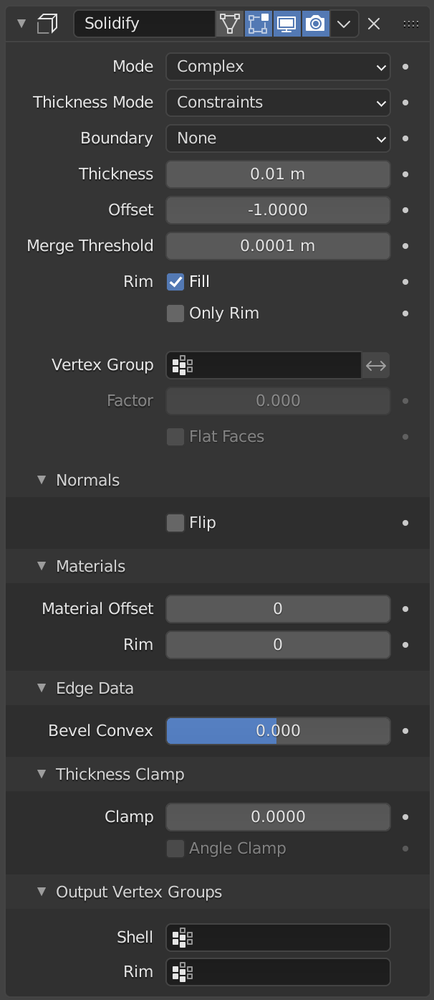
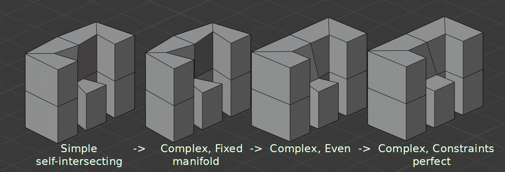
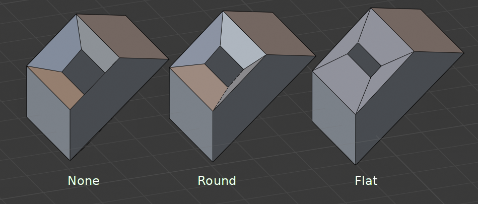

实体化修改器¶
实体化 修改器获取任意网格的表面，然后为之添加深度，使之变厚。
选项¶

简单模式下的实体化修改器。¶ |

复杂模式下的实体化修改器。¶ |
- 模式
- 简单模式
这是默认的实体化算法，它只是简单地挤出几何体。此算法不适用于边有两个以上相邻面的几何体。
Important
如果相邻面的法线不指向同一个大方向，简单模式将无法固化这些面的边界。如果法线没有被重新计算，或者是在单面的表面上，如莫比乌斯带，这种情况就会发生。
- 复杂模式
这是一个可以处理各种几何情况的实体化算法，以保证输出的几何体是流形的。这个算法能够对莫比乌斯环、克莱因瓶、建筑墙面布局等形状进行实体化，而 简单模式 无法做到。如果没有特殊情况，建议选择 简单模式 ，因为额外的逻辑使得这个算法的速度要慢很多。
Note
在修改器选项卡中没有折痕的选项，因为折痕是以动态方式处理的。修改器会将智能的原始网格的折痕转移到输出网格中，以配合 表面细分 修改器工作。
- 厚度模式 复杂模式
选择厚度处理方式(厚度解算器)。
对非流形网格的不同厚度选项。¶
- 固定
这类似于没有启用 均匀 选项的 简单模式 。新顶点与旧顶点之间的距离总是固定的。
- 均匀
这类似于启用 均匀厚度 和 高质量法线 的 简单模式 。它可以调整尖角，但当三个以上的面一起出现时，可能并不总是有效。
- 约束
这是一个更高级的模型，试图在所有地方都能得到最佳厚度。对于最多三个面，它总能保证找到最优解。
- 边界范围 复杂模式
选择最适合模型的边界范围。
同一种Matcap下，不同边界范围选项带来的效果。¶
- 无
没有应用任何边界修正。结果稳定。
- 圆(四舍五入)
调整开口的边界，使其朝向内侧(如鸡蛋上的孔)。
- 平展
将平面开口的边界调整为平面（如切割一个球）。
- 厚度
待实体化的深度。
- 偏移量
介于(-1到1)之间的值，用于定位原始网格内外的实体化输出。内部和外部是由面法向决定的。设置为0.0时，实体化后的输出将以原始网格为中心。
- 均匀厚度 简单模式
过调整尖角来保持厚度。有时提高质量，但也增加了计算时间。
- 合并阈值 复杂模式
几何体会合并的距离。
- 框
- 填充
填充内部和外部边之间的间隙。
- 仅边沿
在 简单模式下 ：不会挤出与原表面平行的表面，而只增加垂直的边沿。
在 复杂模式 下：将只留下生成的垂直边沿。
Note
填充边沿 和 仅边沿 仅在 非流形 物体上有区别，因为 边沿 是从原几何形体的边界产生的。
- 顶点组
仅该组的顶点进行实体化.权重系数会乘上厚度，所以低权重的顶点会更薄。
- 反转
反转顶点组，让 不 属于顶点组的顶点实体化。
- 系数
有多少顶点权重会被考虑在内。
取 0.0 时，权重为 0 的顶点将没有厚度(创建重合的顶点)。
取 0.5 时，权重为 0 的顶点的厚度是那些有最大权重顶点厚度的一半。
取 1.0 时，权重被忽略，每个顶点都会使用 厚度 值。
- 平直面 复杂模式
使用分配给面的顶点的最小顶点权重来确保新面保持与原面平行。这很慢，所以在不需要的时候要禁用它。
法向¶
- 翻转法线
翻转所有几何形体的法线(包括内部和外部表面)。
- 高质量法线 简单模式
通过计算法线来获取更均匀的厚度。这样做有时可以提升质量，但也增加了计算时间。
材质¶
- 材质偏移
对新的几何体使用不同的材质。这作为实体化面的原始材质的偏移量而使用。
值为 0 则使用相同的材质。
值为 1 则使用原始材料正下方的材质。
值为 -2 则使用原始材料上方两个单位的材质。
这些是夹在最顶部和底部材料槽。
- 框
同样的，你也可以赋予边沿面另一个材质。

输出顶点组¶
- 外壳
生成的外壳几何体将被加权到顶点组。您可以使用其他修改器的顶点组影响控件，只影响外壳几何体。
- 框
与 壳顶点组 相同，但这是相对于生成的边沿几何体。